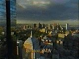
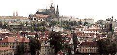
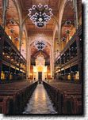

RMIsaac's
TravelPage

TRAVEL:
- Regional
Information: in Yahoo
 Rough Guides
Travel series: the other side of traveling-- the odd or unusual; also
check here
Rough Guides
Travel series: the other side of traveling-- the odd or unusual; also
check here
- Split: alternative travel
essays on journeys to Paris, Athens, Croatia and Egypt
- Rick Steves' Europe Through the
Back Door (ETBD): Edmonds, WA based company with great information
about economical travel; very useful for my 1997
trip to Eastern Europe
- Lonely Planet
Guidebooks: for the adventurous traveler
- Fodor's: check here for affordable
hotels
- Travelzoo: travel
deals
- Priceline.com: "it's gonna be
big!"... name your own price for airline tickets, hotel rooms, new cars,
home mortgages, home equity loans and refinancing
- Moving? Find out what your salary should be in your new locale with
the Homebuyers' Fair
Relocation Salary Calculator
- Worldwide Virtual Tourist/City Net:
visit the world from your armchair: over 3000 cities and all sorts of
links: culture, lodging, history, etc.
- Need a map? Mapquest.com: maps
of dozens of cities; customizable travel maps...
- Subway
navigator: find your way from one place to another via the subways of
the world
- A couple o' guys traveling around the country and publishing a really
cool magazine along the way: Monk
Magazine
- TRAVEL INFO FOR QUEERS
The following represents my travels
and places I've lived:
 Visit my
hometown:
Visit my
hometown:

- Worcester...
a.k.a. "Wormtown"...This
site contains a great deal of information about Worcester: its
attractions, history, media, etc., and links to other Worcester sites
 How to Pronounce
Worcester and how to spell it: an enduring problem!
How to Pronounce
Worcester and how to spell it: an enduring problem!

- WorcesterWeb
- City of Worcester's own
webpage: information on city administration, services and schools
- A Profile of
Worcester: geography, gov't, demographics, housing, education,
economy, transportation, culture, recreation, finance
- City.Net
Worcester: information on education, events, government, museums,
news, weather; also city guides
- I worked at the Worcester Public
Library for six years in the late '70s and '80s
- College of the Holy Cross, one
of 10 colleges and universities in the Worcester area; this site has local
news and links to sites of interest
- THE W00sta PAGE
- The Worcester Phoenix:
alternative weekly
- Worcester Sucks:
"there's no escaping the ugly truth. Escape now, while you still can!"
- Massachusetts
info and lots of it

WCVB: CityCam:
pictures of Boston!
Boston.com: has student guides to the
city as well as tourist info, hip places to eat and fun things to see.
Boston
Web Project: a spectacular photo tour of the historic sights of
Boston in the day and night. Learn about different neighborhoods such as
Kenmore, Chinatown, Beacon Hill, Fenway and even the Suburbs. Also
information on schools, shopping and entertainment in the area.
Virtually Boston: an interesting
place to read about Boston history as well as other peoples' travel
diaries while visiting the city. The photo album has some impressive
photos of city streets and landmarks.
Bizarro Boston: "When
you get tired of the Freedom Trail, hop on over to the bizarro trail."
Where I used to summer: Cape Cod
Virtual Cape
Cod: tons of stuff on every Cape community, from Bourne to P'town,
including maps and local papers
Cape Cod & Nantucket:
lots of links about their history, businesses, environment, schools, and
links to beaches on the Web.
Visit my adopted hometown Seattle,
Washington, the Emerald City
Find out all about Israel here
Lots of
E G Y P T info
I recently spent a month
travelling through EASTERN EUROPE (or "Central Europe" as it is
sometimes called); you can read about my trip
here...(the Gay and Jewish side of my trip is
here)... These are some of the places I visited:
- Central Europe Online:
news and travel information about the Czech Republic, Hungary, Poland,
Slovakia and other nations in the area; lots of interesting resources and
articles
- Berlin Gay
information
- Schwules
Museum, the gay museum in Berlin

Lots of
information about PRAGUE, one of
the world's most beautiful cities
- Prague
for Visitors
- Sightseeing in
Prague
- Upcoming
Cultural Events in Czech Rep.
- Prague
Local Guides, including Joseph's Town or
The former Jewish Quarter, aka Josefov, which is home to the Jewish Museum
- Cybeteria: a cool cybercafe
located at Stepanska 18, Praha 1
- Prague
Trams
- Terezin,
a town outside Prague used as a Nazi concentration "show-camp" to dupe the
Red Cross; a disproportionate number of its prisoners were elderly and
children, the latter of which produced some famous artwork. Most perished
at Auschwitz.
- A bit to the south lies Cesky Budejovice, home of Budvar, a.k.a. Budweiser: "Budweiser
Budvar, the "Original Budweiser" beer, is known for its unique
quality, tradition and widely recognized rich, full-bodied taste.
The brewing craftsmanship of Budweiser Budvar N. C., originates from a
more than 700-year-old brewing tradition in Ceski Budejovice - or Budweis,
as it is known in German. Budweiser Budvar guarantees the production of a
top lager known through-out the world as a symbol of exceptional quality."
- Travel, Tourism in
Hungary
- A
Little Tour in Budapest: thorough, and good pictures
- Five
walks in Budapest
- A
huge collection of Budapest related links
- Budapest
Cafes
- Budapest
Underpasses: these are underground passageways which allow people to
cross busy streets and reach trams
which run in the middle of the street; they house stores and street people
- An
Egghead's Guide to Budapest
- The Hungarian gay publication: Masok

- Europe's
largest syngagogue: The Budapest Main
Synagogue, aka Dohany Synagogue (shown at left), where I spent Rosh
Hashana 1997
- Travel info on Poland
- Poland: lots of
links
- Polish-Jewish
relations
- Polish
Synagogues: pictures!
- Kazimierz and
Cracow: a journal of one man's trip to Krakow and its Jewish Quarter,
Kazimierz, part of a larger work, A Virtual Tour of
Auschwitz, a detailed and touching journal of his experiences in
Auschwitz and Birkenau; includes pictures of many sites there; other Auschwitz/Birkenau
Photographs by Alan Jacobs can be found here
- Auschwitz
I concentration camp; http://www.scrapbookpages.com/Poland/Birkenau/Birkenau01.html
- Celebrating the
Jewish New Year in Krakow
- Krakow's
former Jewish District, Kazimierz, offers development potential -- to
say the least!
- The
Old Jewish Quarter of Kasimierz in Krakow: with an emphasis on
"Schindler's List"
I also spent a wonderful
eight days in lovely, tropical Puerto Vallarta, Mexico
with a friend -- I highly recommend it!
Read some Puerto Vallarta Personal
Experiences: "This page is for all of you who wish to share your
experiences in and around this beautiful area of the world."
Puerto Vallarta
webcam
One of my all-time favourite places! C'est si belle...Montreal:
all sorts of links from City.Net
See Timelapse pictures of
San Francisco from today, from 5am to 10pm; very cool!
 San
Francisco city guide
Bay Area
Rapid Transit (BART)
San
Francisco city guide
Bay Area
Rapid Transit (BART)

 Comments? Write me at RMIsaac@eskimo.com
Comments? Write me at RMIsaac@eskimo.com
Approximately  hits on all subdirectories since 28 July 1995
hits on all subdirectories since 28 July 1995